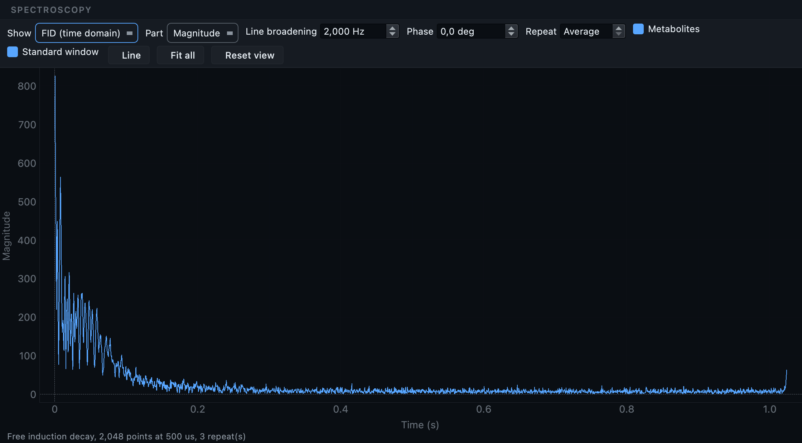

MRI: a protocol with everything in it.
A second Oldenburg dataset, chosen because it breaks things. Six anatomical contrasts, functional runs with reference volumes, diffusion with the scanner-derived maps that look like derivatives and are not, a reversed-direction volume that belongs in a different folder, objects with no image data at all, and a physiological log that is corrupt at source.
The MRI tutorial covers the workflow on a clean dataset. This page assumes it, and spends its time on the six situations that make a real archive harder than a sample one.
Oldenburg neuroimaging unit, rich protocol
Three source folders (OL_3844,
OL_3845,
OL_3846) grouped by patient identifier.
The first two share one and collapse into
sub-001 with
ses-pre and
ses-post; the third stands alone as
sub-002.
Ten kinds of thing in one protocol.
The subject grouping works exactly as it does on the primary dataset: patient identifiers group the folders, study dates order the sessions. What is different is the breadth of what is inside.
| What is in the folder | Where it ends up |
|---|---|
| T1w, T2w, T2starw, FLAIR | anat/, four different suffixes |
| Functional runs and their single-volume reference images | func/, as bold and sbref |
| Diffusion, plus FA, colFA, trace maps | dwi/, each with its own suffix |
| A reversed-direction single-volume diffusion acquisition | fmap/, rerouted |
| Fieldmap magnitude and phase-difference pairs | fmap/ |
| Physiological logs inside the DICOM data | Beside the run they were recorded with |
| Localisers, calibrations, report objects, a TENSOR map | Excluded, with reasons |
The scan produces 51 rows: 29 keepers and 22 skipped.
Several anatomical contrasts.
The primary dataset has one anatomical image per session, so its
filename needs nothing to distinguish it. Here there are four contrasts,
and each has its own BIDS suffix:
T1w, T2w,
T2starw and
FLAIR. The suffix is what tells them apart,
not an acq label.
This is worth checking rather than assuming, because it is where a
classifier gets things subtly wrong: a T2starw labelled as T2w is valid
BIDS, converts without complaint, and is the wrong image for whatever
reads it. Sort by the conf column and read
the anatomical rows
against their sequence names.
Maps the scanner computed for you.
Modern scanners compute diffusion maps on the console and export them alongside the raw data: fractional anisotropy, colour-coded FA, trace, and others. They look like derivatives, and the instinct is to move them into a derivatives folder or drop them.
Both instincts are wrong here. Since BIDS 1.11 these are first-class
suffixes in the diffusion folder, so
_FA, _colFA and
_trace belong in
dwi/ beside the acquisition they came from.
They are recognised and written there, rather than discarded as
unrecognised or relocated somewhere no pipeline will look.
A Siemens TENSOR map contains no image
pixels at all, so no converter can produce a NIfTI from it. It is
detected, excluded, and marked with the reason, which is covered in
situation 4.
A diffusion series that is really a fieldmap.
Among the diffusion acquisitions there is a single-volume series with reversed phase encoding. It is acquired on the diffusion sequence and the scanner labels it as such, but it is not diffusion data: it exists so that distortion correction has a reference with the opposite distortion.
Written as diffusion, it is one more volume nobody uses, and the correction step has nothing to work with. It is recognised and routed into the fieldmap folder with the appropriate suffix, so the pipeline that needs it can find it where the standard says it will be. There is no heuristic file to write, and nothing for you to configure.
fmap/ rather
than dwi/ before anything is created.
Objects that are not images.
A DICOM file does not have to contain a picture. Report objects and
derived maps like TENSOR are DICOM in
every respect except the one that matters: they carry no image pixel
data. A converter asked to convert one fails, and the failure looks
exactly like a failed conversion of something you wanted.
A spectroscopy frame carries no image pixels either, so for a long
time it was excluded for the same reason. It is now converted:
dcm2niix writes NIfTI-MRS, and
mrs has been a BIDS datatype since
1.11, so the frame becomes a real file in
mrs/ rather than a row set aside. It
is exempt from the no-pixel rule the way
physio already was. There is a viewer
for it in the next section.
The scan checks each file for image data and marks a series that has none. Those rows are excluded with the reason shown, tinted teal, and badged. Hovering one explains why. The value of this is not the exclusion, it is that the conversion log afterwards contains only real failures, so a real failure is worth reading.

A physiological log that fails at source.
This dataset carries several Siemens physiological logs, and not all of them convert. One is corrupt in the source data, and no amount of careful handling will produce a valid table from it.
What matters is what happens next. The row is reported with a legible reason, and every other row still converts. Nine physiological tables are written; three rows fail. A pipeline that aborted on the first failure would leave you with a partial dataset and a decision about whether to start again.
Nothing in the raw folder looks like a respiration trace: the signals are inside the DICOM data, recorded alongside the images. If you have converted Siemens functional data before and never seen a physiological file in the output, this is why.
When the classifier does not know your protocol.
A rich protocol is also where a site's own naming shows up. If a series is named in a way the classifier does not recognise, correcting the row works once; a rule works every time.
--rules-file.
Hints come in two strengths. An ordinary hint is applied to rows the classifier has not already claimed, so it fills gaps. A forced hint overrides the converter's own guess, which is what you want when the guess is confidently wrong about your protocol.
Validate.
Despite everything in it, this dataset validates with 75 clean files, 5 warnings and no errors. The warnings are the familiar ones: licence and authors at dataset level, and task descriptions on the functional sidecars.
That is the point of the exercise. A protocol this varied is where conversions usually produce something that mostly works, with a few files quietly in the wrong place. Everything unusual here was either converted into the right folder or excluded with a reason you can read.

Spectroscopy is not an image, and has its own viewer.
A single-voxel spectroscopy acquisition converts to NIfTI-MRS and
lands in mrs/. The file ends in
.nii.gz, but it is a NIfTI by container
only: the data block is a complex free induction decay, one voxel
deep, and showing it as slices would show nothing at all. So clicking
one in the Editor opens a spectrum instead.
How the scan finds it. A spectroscopy series is
recognised from its DICOM header rather than from its name, in any of
three forms: the standard MR Spectroscopy storage class, an image type
that says SPECTROSCOPY, or Siemens' own
non-image storage when its header marks the contents as spectra. That
last one needs care, because Siemens stores physiological logs in the
same class, and a physiological log is told apart by its image type.
So a series named like a functional run still lands in
mrs/, and the scan keeps it rather than
setting it aside for carrying no image pixels.
The suffix follows the standard: svs for a
single voxel, mrsi for a spectroscopic
image, unloc when the header says no
localisation was used. mrsref is never
guessed. A water reference cannot be told apart reliably from its
header, so if a series is one, set its suffix yourself in the
inspection table.

| Control | What it is for |
|---|---|
| Show: Spectrum or FID | The spectrum is what a spectrum is read from. The FID is what the scanner measured, and is what to look at when a spectrum looks wrong: the question is usually whether the time-domain signal decayed at all. |
| Part | A spectrum is complex. Magnitude needs no phasing and is the safe default; the real part is what quantification uses, once the phase is right. |
| Line broadening | Multiplies the FID by a decaying exponential before the transform, trading resolution for signal to noise. Every MRS package applies a few Hz, because the tail of an in-vivo FID is noise with no signal left in it. |
| Phase | Zero-order phase. An unphased real part shows peaks dipping below the baseline, which reads as an artefact rather than as a phase. |
| Repeat | The repeats exist to be averaged, and that is where the signal to noise comes from. Stepping through them one at a time is how a corrupted repeat gets found. |
| Standard window / Fit all | 0.2 to 4.2 ppm is the window a brain spectrum is conventionally read in. Fit all shows the whole sampled band instead, water and lipid included, which is the only way to see the residual the sequence was meant to suppress. |
The chemical shift axis runs right to left, which is the convention every textbook, every fitting package and every paper uses. Drawn the other way round you get a plausible-looking picture with every metabolite on the wrong side of the water.
The names move as you zoom. Creatine at 3.03 and choline at 3.22 are a fifth of a ppm apart: across the whole window their labels collide, and zoomed into half a ppm they have the pane to themselves. A label's width in pixels does not change with the zoom, so which names overlap is a fact about the current window, and the rows are recomputed every time it changes.
The FID is a second page of the same viewer, not a separate tool:

What the converter takes out of the metadata.
A DICOM header carries the participant's name, their identifier, their date of birth, their age, sex, height and weight. A converter that copies the header into a JSON sidecar copies those too, and a validator will not mention it, because a sidecar carrying a date of birth is perfectly well-formed BIDS.
Those fields are removed from every sidecar in the dataset, as the last step of the conversion. The UIDs are kept, because they are what lets an image be traced back to the series it came from and they identify nothing on their own.
NIfTI-MRS carries its metadata inside the
.nii.gz, in a header extension, rather
than in a sidecar beside it. No amount of cleaning JSON files
reaches it, so the extension is rewritten in place.
InstitutionAddress is left alone. The
BIDS schema declares it a recommended field, and it describes the
site rather than the participant, so removing it would be this tool
overriding the standard rather than protecting anybody. If your
ethics approval requires it gone, remove it in the Editor with
Find and replace a value, which does the whole
dataset at once.
A note on dcm2niix versions
BIDS Manager pins dcm2niix to one exact
version and installs it with everything else. The converter's
behaviour moves between releases in ways that change the dataset you
get, so the version is part of what makes a conversion repeatable.
Two moves are worth knowing about if you point it at your own build
with --dcm2niix:
- Older builds cannot convert spectroscopy. Run over the same study, 1.0.20260416 wrote 19 images and no spectra where the pinned version writes 21. It fails quietly: the spectra are simply absent.
- The label dcm2niix gives a diffusion derivative changed. It is a no-emit decision either way, so a build on the wrong side of that change silently stops converting those files rather than reporting a failure. The classifier now holds that decision back until the fallback has had its turn.
On Windows, one more thing: the released build is killed by the operating system on a spectroscopy series, because it runs out of the stack its build reserves. BIDS Manager carries a Windows build with enough stack and uses it only for that case, so nothing else changes.
Real numbers from this dataset.
29 keepers across both subjects. The 22 skipped are localiser variants, report objects and calibrations. With probe convert on, about 30 seconds.
32 NIfTI files across anat, func, dwi and fmap, 12 physiological tables, six gradient table pairs, and 46 sidecars. No failures.
Counts are per finding, not per file: 161 of the
warnings are one TODO placeholder
each. The two errors belong to the diffusion derivatives and are
explained below; they are the reason this dataset is the advanced
one.
The scanner produced a trace-weighted image alongside the
diffusion series, and dcm2niix wrote a
.bval and a
.bvec next to it as it does for any
diffusion output. BIDS allows those two extensions beside a
_dwi image and not beside a
_trace one, because a derivative has
no gradient table of its own to describe. So the files are real,
the names are right, and the pairing is not allowed.
The fix is to delete the two files: Tools → Delete... in the Editor, or untick the trace row before converting if you do not want the derivative at all. Nothing else in the dataset refers to them, which the delete preview will confirm before it does anything.
What a rich protocol throws at you.
| What you see | What it means |
|---|---|
| An anatomical image with the wrong suffix | A T2starw classified as T2w, or similar. Valid BIDS, wrong
image. Sort by conf and read the
anatomical rows against their sequence names. |
| Scanner-derived maps missing from the output | FA, colFA and trace belong in
dwi/ with their own suffixes since
BIDS 1.11. If they are absent, check they were not unticked
during curation. |
A TENSOR row that will not convert |
It never will: it carries no image pixels. It is excluded with that reason, and the teal tint says so. |
The reversed-direction volume still in dwi/ |
The reroute did not fire, usually because the acquisition does not look single-volume to the scan. Move it by editing the datatype and suffix on that row. |
| Fewer physiological tables than logs | Expected on this dataset: one log is corrupt at source. The log names the file and the reason, and the rest still convert. |
| A series your site names in its own way, misclassified | Correct the row once, then write a scan rule so the next scan of that protocol gets it right. A forced hint overrides the converter's own guess. |
From the command line.
# 1. Create the dataset and its project. bidsmgr-create ~/bids/rich_protocol --name "Rich protocol" # 2. Scan, with any site rules you have written. bidsmgr-scan ~/raw/OL_rich --project ~/bids/rich_protocol \ --probe-convert --rules-file ~/rules/oldenburg.json # 3. Convert. 32 images, 9 physiological tables, 3 physio rows fail. bidsmgr-convert --project ~/bids/rich_protocol # 4. Enrich: fieldmap IntendedFor, scans tables, participants. bidsmgr-metadata --project ~/bids/rich_protocol --fill-todos # 5. Validate, with the deeper pass. 75 ok / 5 warn / 0 err. bidsmgr-validate ~/bids/rich_protocol --strict --html
Every flag is documented in the CLI reference.